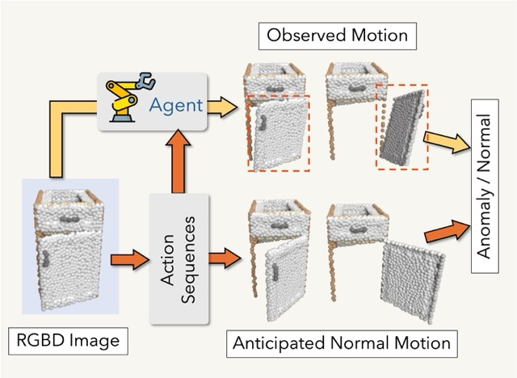
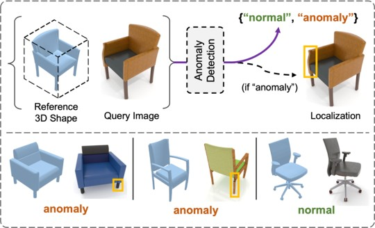
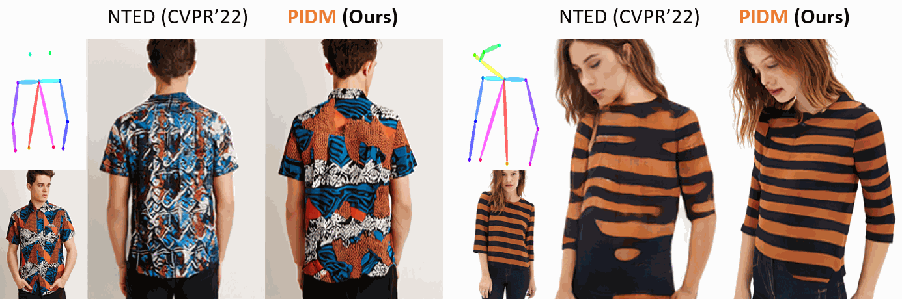
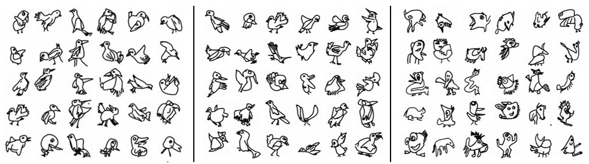

Recent News
[02/2025]: 1 paper at CVPR 2025
[10/2024]: 1 US patent granted (link)
[02/2024]: 1 paper at CVPR 2024
[10/2023]: 1 US patent granted (link)
[07/2023]: 1 paper at ICCV 2023
[06/2023]: 1 paper at MICCAI 2023
[02/2023]: 1 paper at CVPR 2023
[07/2022]: 1 paper at ECCV 2022
[07/2021]: 1 paper at ICCV 2021
[10/2019]: 1 paper at Information Fusion
[07/2019]: 1 paper at Pattern Recognition
[03/2019]: 1 paper at CVPR 2019
[05/2019]: 1 paper at ICIP 2019
[08/2018]: 1 paper at Pattern Recognition
[04/2018]: 3 papers at ICPR 2018
Education

University of Edinburgh, UK
PhD at School of InformaticsMay 2023 - Present

Jadavpur University, India
B.E. in Electrical EngineeringJuly 2016 - May 2020
Research Experiences

MBZUAI, Abu Dhabi
Researcher, Intelligent Visual Analytics Lab.Nov 2020 - Apr 2023

University of Manitoba, Winnipeg, Canada
MITACS Internship, 2019.May 2019 - August 2019

Robert Bosch, Bangalore
Intern, Computer Vision LabJune 2018 - July 2018
I'm a 2nd year PhD student in the School of Informatics at the University of Edinburgh. I work with Dr. Hakan Bilen in the Visual Computing Group (VICO). My secondary supervisor is Dr. Changjian Li from GraphVix lab. Previously, I was a full-time research assistant at MBZUAI, Abu Dhabi, where I worked on computer vision and machine learning with Dr Fahad Shahbaz Khan, Dr Salman Khan and Dr Hisham Cholakkal. During my undergrad, I have worked with Dr Yang Wang at the University of Manitoba, Canada and Dr Partha Roy at IIT Roorkee, India. I did my bachalors from Jadavpur University, Kolkata in Electrical Engineering.
- Publications
- Research
- Contact
-
More details are available on Google Scholar
Interactive Anomaly Detection for Articulated Objects via Motion Anticipation - [paper] / [code] / [dataset]
Ankan Bhunia, Changjian Li, Hakan Bilen,
NeurIPS, 2025

Odd-One-Out: Anomaly Detection by Comparing with Neighbors - [paper] / [code] / [dataset]
Ankan Bhunia, Changjian Li, Hakan Bilen,
CVPR, 2025
Looking 3D: Anomaly Detection with 2D-3D Alignment - [paper] / [dataset] / [code] / [webpage]
Ankan Bhunia, Changjian Li, Hakan Bilen,
CVPR, 2024

Generative Multiplane Neural Radiance for 3D-Aware Image Generation - [paper] / [code]
Amandeep Kumar, Ankan Bhunia, Sanath Narayan, Hisham Cholakkal, Rao Anwer, Salman Khan, Ming-Hsuan Yang, Fahad Khan,
ICCV, 2023

Person Image Synthesis via Denoising Diffusion Model - [paper] / [code] / [demo] / [webpage]
Ankan Bhunia, Salman Khan, Hisham Cholakkal, Rao Anwer, Jorma Laaksonen, Mubarak Shah, Fahad Khan,
CVPR, 2023

DoodleFormer: Creative Sketch Drawing with Transformers - [paper] / [code] / [webpage]
Ankan Bhunia, Salman Khan, Hisham Cholakkal, Rao Anwer, Fahad Khan, Jorma Laaksonen, Michael Felsberg,
ECCV, 2022
Handwriting Transformers - [paper] / [code] / [demo] / [webpage] / [bloomberg article] / [patent]
Ankan Bhunia, Salman Khan, Hisham Cholakkal, Rao Anwer, Fahad Khan, Mubarak Shah,
ICCV, 2021
Handwriting Recognition in Low-resource Scripts using Adversarial Learning - [paper]
Ayan Kumar Bhunia, Abhirup Das, Ankan Bhunia, Sairaj Kishore, Partha Pratim Roy,
CVPR, 2019
Improving Document Binarization via Adversarial Noise-Texture Augmentation - [paper]
Ankan Bhunia, Ayan Kumar Bhunia, Aneeshan Sain, Partha Pratim Roy,
ICIP, 2019
A Deep One-Shot Network for Query-based Logo Retrieval - [paper]
Ayan Kumar Bhunia, Ankan Bhunia, Shuvozit Ghose, Partha Pratim Roy, Umapada Pal,
Pattern Recognition, 2019
Script identification in natural scene image and video frames using an attention based Convolutional-LSTM network - [paper]
Ankan Bhunia, Aishik Konwer, Abir Bhowmik, Ayan Kumar Bhunia, Partha Pratim Roy,
Pattern Recognition, 2019
Signature Verification Approach using Fusion of Hybrid Texture Features - [paper]
Ankan Bhunia, Alireza Alaei, Partha Pratim Roy,
Neural computing and Applications, 2019
Word Level Font-to-Font Image Translation using Convolutional Recurrent Generative Adversarial Networks - [paper]
Ankan Bhunia, Ayan Kumar Bhunia, Prithaj Banerjee, Aishik Konwer, Abir Bhowmik, Partha Pratim Roy, Umapada Pal,
ICPR, 2018
Staff line Removal using Generative Adversarial Networks - [paper]
Aishik Konwer, Ayan Kumar Bhunia, Abir Bhowmik, Ankan Bhunia, Prithaj Banerjee, Partha Pratim Roy, Umapada Pal,
ICPR, 2018
Handwriting Trajectory Recovery using End-to-End Deep Encoder-Decoder Network - [paper]
Ayan Kumar Bhunia, Abir Bhowmik, Ankan Bhunia, Aishik Konwer, Prithaj Banerjee, Partha Pratim Roy, Umapada Pal,
ICPR, 2018 -
• Odd-One-Out - [Paper / GitHub / Dataset]
Detecting 'odd-looking' samples in multi-view multi-object scenes.
 • Looking3D - [Paper / GitHub / Project / Dataset] - [CVPR'24]
• Looking3D - [Paper / GitHub / Project / Dataset] - [CVPR'24]A new benchmark for conditional AD via 2D-3D alignment.
 • PIDM - [Paper / GitHub / Project / Demo] - [CVPR'23]
• PIDM - [Paper / GitHub / Project / Demo] - [CVPR'23]
Pose-guided person image synthesis via Diffusion models.

• GMNR - [Paper / GitHub] - [ICCV'23]
A novel 3D-aware generative model based on multi-plane represenation.

• Doodleformer - [Paper / GitHub / Project] - [ECCV'22]
A new coarse-to-fine framework for creative sketch generation problem.

• HWT - [Paper / GitHub / Project / Demo / Huggingface-demo] - [ICCV'21]
Handwriting Synthesis - Generate text in anyone's handwriting.

-
The Bayes Centre, Edinburgh EH8 9BT
Email: ankankumarbhunia [at] gmail.com /
ankan.bhunia [at] ed.ac.uk